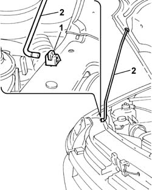

7025A58 device for holding bonnet lid open - r+r
- Path
- Procedures > 70 FITTINGS > 7025 COMPARTMENT LIDS > 7025A bonnet lid > 7025A58 device for holding bonnet lid open - r+r
- Kind
- repair procedure (removal / refitting; the operation number is the code)
- Applies to
- all engines; all production periods
- Interactive page
- https://sloeber94.github.io/elrnDB-fDbl/en/#/2585103
Applies to: all engines; all production periods
 Removing
Removing
 Refitting
RefittingOpen the bonnet.
1. Open the safety stop.
2. Support the bonnet, and remove the rod.
Close the bonnet lid.

Applies to: all engines; all production periods
Refitting
RemovingOpen the bonnet and fit the stay.
Close the safety stop.
Close the bonnet lid.